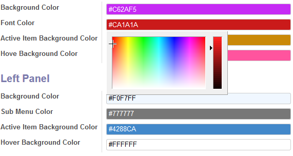

<section class="oe_container oe_dark">
    <div class="oe_row">
        <div class="oe_span12">
            <h2 class="oe_slogan">Color widget for char field Odoo 9</h2>
            <h4 class="oe_slogan">How Can you use this :<br/>
            Just Add a widget "color in your field defention in the view like this <field name='color' widget='color'/>"</h4>
            <div class="oe_screenshot" style="text-align: left;">

                <br><br>
            </div>
        </div>
    </div>
</section>
<section class="oe_container" style="background-color: #0a0d1e;">
    <div class="oe_row ">
        <div style="margin-bottom:10px;" class="oe_slogan text-center">
            <div class="oe_span12">
                <h3 class="text-center" style="color:#FFF">Contact Me for support, query, customization</h3>
            </div>
            <span>
                <a target="new" href="https://eg.linkedin.com/in/mostafa-mohammed-449a8786"
                   style="color: #c9ebd9 !important;font-weight:bold;">Linked</a> |
                <a target="new" href="https://apps.odoo.com/apps/modules/browse?author=Mostafa%20Mohamed"
                   style="color: #c9ebd9 !important;font-weight:bold;">My Apps</a> |
                <a href="mailto:m.dev.odoo@gmail.com" style="color: #c9ebd9 !important;font-weight:bold;">Write Me</a>
            </span>
        </div>
    </div>
</section>
